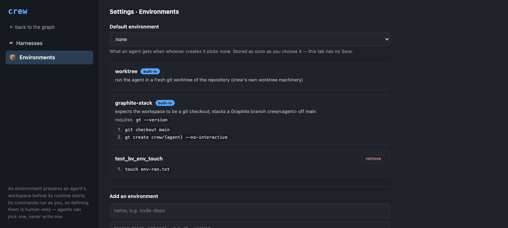
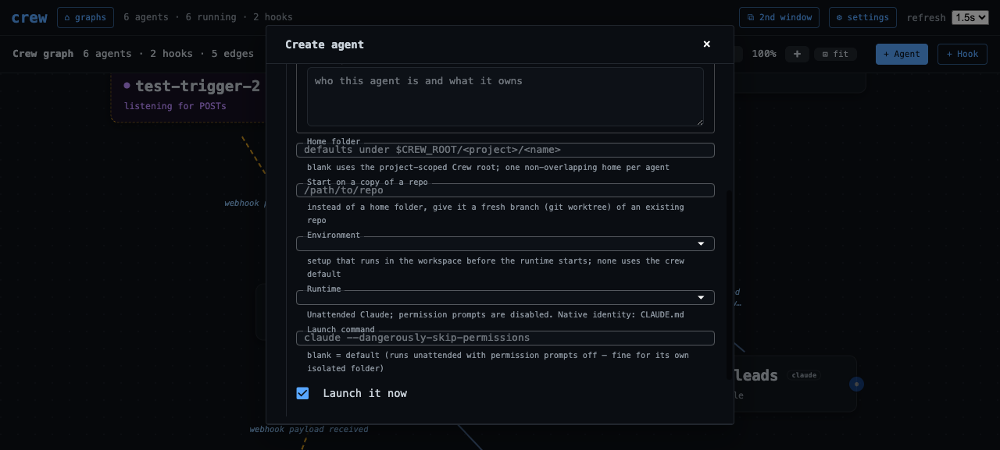

Environments: prepare a workspace before the agent starts
Named, operator-defined environments run setup commands in an agent's workspace before its runtime launches — one primitive powering out-of-the-box options like a fresh git worktree or a Graphite branch stacked off main, selectable at agent creation and managed from the settings page.
Feature IDenvironments
Created2026-07-28
Surfacescli, dashboard
Dependenciescrew-settings
User flow
Start state
An agent's home
directory starts as whatever --home or the default
tree gives it. Any workspace preparation — cloning into a worktree,
creating a branch, installing dependencies, copying an env file —
happens by hand before or after the spawn, and there is no way to
make "every new agent gets a fresh worktree" a crew-wide
policy.
Outcome
The settings page gains an
Environments tab. An environment is a named routine — an optional
prereq check plus setup commands — that runs inside the agent's
home after it is materialized and before its harness launches. Two
ship out of the box: worktree (a fresh git worktree
via crew's own worktree machinery) and graphite-stack
(a Graphite branch stacked off main). The operator picks one per
agent at creation (--env or the Create-agent select)
or sets a crew-wide default; a failed prereq or setup command
fails the spawn cleanly instead of launching an agent into a
half-prepared workspace.
Architecture
One primitive powers every option: an environment's
prereq and commands run in the agent's freshly materialized home,
with the same session context the launch command gets, before the
harness is typed into the pane. The worktree built-in
is the exception — it routes crew's existing native worktree
machinery instead of shelling raw git. Definitions are stored
crew-wide (fail-closed, atomic, owner-only lock discipline);
built-ins live in code and cannot be edited, shadowed, or deleted.
A failing prereq or command aborts the spawn along the existing
cleanup path — no half-prepared agent, no leaked home or
session.
Public interface
Commands and APIs
crew spawn-agent --env <name>;
crew env list [--json] | set-default <name|none> |
add <name> --command ... [--prereq ...] [--description ...] |
remove <name>; dashboard
GET /api/environments and
POST /api/environments/update
(set_default / add / remove) behind the operator cookie + CSRF;
the Environments tab on the settings page; and an Environment
select in the Create-agent modal.
POST /api/agent/create accepts an optional
environment. In Python,
crew.environments is the one store and
run_setup() the one executor.
Data and lifecycle
Custom
definitions and the crew-wide default live in
var/environments.json (atomic writes, owner-only lock,
fail-closed reads — the settings-store discipline). Built-ins are
code, listed first and immutable; removing a custom environment
clears the default if it pointed there. Each agent row records the
environment that prepared it (schema field, merged
idempotently), so provenance survives on the durable graph. The
setup runs once per spawn; revive does not re-run it — the
workspace already exists.
Security and failure boundaries
Authority
An environment's
commands run as the operator in every spawn that uses it, so
defining or changing one is human-only: guard op
environments_write (in HUMAN_ONLY_OPS,
live-pane actor identity) on the CLI, operator capability + CSRF on
the dashboard. Agent actors cannot pass --env — the
same confinement as --launch-cmd — though the
crew-wide default, being operator policy, applies to their spawns
too. Unlike harness launch commands, environment commands are
deliberately free-form: setup steps have no sane enum, and the
human-only write gate is the control.
Failure behavior
A failing prereq
refuses the spawn before any setup command runs, naming the check;
a failing or timed-out command aborts the spawn with the failure
tail, along the existing cleanup path, so no home, session, or
durable row leaks. Corrupt durable state fails closed with
EnvironmentsError rather than silently spawning
without setup. run_setup never raises — every failure is an honest
(ok, detail) the spawn surfaces as a clean error.
Rollout and reversal
Fully additive: with no store and no
--env, spawns behave exactly as before, and the new
agent-row field merges idempotently into existing schemas. This PR
stacks on the settings-page PR (the Environments tab lives there).
Reversal: remove custom environments / clear the default from the
tab, or revert the commit — rows that recorded an environment name
keep it as inert provenance.
The two built-ins with their real definitions — worktree (crew's own repo/worktree machinery, no commands) and graphite-stack (prereq gt --version; git checkout main; gt create crew/{agent} --no-interactive) — and 'no crew-wide default — new agents start in a plain home'.
Spawn output includes 'environment: test_bv_env_touch (prepared the workspace before launch)'; the agent's home contained env-ran.txt created by the environment's command BEFORE any runtime start, and the durable row recorded environment='test_bv_env_touch'. Fixture agent and environment removed afterward.
200 {"ok": true, "default": null, "environments": [...]} — built-ins first with builtin true, then customs; the same GET without the operator cookie is 403.
tests/browser/environments.md (executed with agent-browser)
All 8 steps live: built-in cards immutable; a custom environment added from the tab and offered everywhere; shadowing the worktree name refused with the teaching message; a real spawn ran its command in the workspace; the default select stored on change and survived reload; the Create-agent modal listed every environment; remove + cleanup left only the built-ins.
Ran 75 tests — OK. Hermetic: store round trips and fail-closed corrupt reads, built-in immutability and shadow refusal, validation, default lifecycle, run_setup outcomes (prereq/command failure, timeout, OSError, {agent} substitution, cwd/env propagation), spawn resolution and confinement, guard, CLI handlers.
cd frontend ; npm test
7 files, 56 tests, all passing — 13 environments-tab specs (immutable built-ins, add/remove, set-default-on-change, refusals keep state) and 3 create-agent specs (select renders, chosen name passed, omitted when none, fetch failure survives).
python3 -m unittest discover tests
Ran 1380 tests at the delivered tree. The three failures and one error are pre-existing on main or environmental (two dashboard baseline tests, the live-foreman fixture, the public-URL webhook test that fails while an ingress tunnel runs). Because this feature adds a schema field, the live path was also exercised for real: schema pushed to the live app, environment provenance round-tripped through MorphDB, a real --env spawn wrote its marker before the session opened, and the failure paths (unknown environment, worktree without --repo, failing command) refused cleanly leaving no home, row, or session.
python3 scripts/validate_feature_docs.py
feature HTML valid: 7 record(s), template present

The Environments tab at the tested revision: immutable built-in cards for worktree and graphite-stack (with its gt prereq and commands), a removable custom environment, the crew-wide default select, and the add form — defining environments is human-only because their commands run as the operator.

The Create-agent modal's manual fields at the tested revision: the Environment select sits beside home/repo/runtime with its hint — setup that runs in the workspace before the runtime starts; none uses the crew default.
Engineering inventory and redaction notes
Declared code: the environments store, built-ins, and executor
(crew/environments.py), the spawn pipeline wiring and confinement
(crew/spawn.py, crew/graphstore.py), the schema provenance field
(crew/schema.py), the human-only guard op (crew/guard.py), the CLI
(crew/cli.py), the two endpoints plus the agent-create field
(crew/server/app.py), the Environments tab, modal select, and API
methods (frontend/src), the rebuilt bundle (static/), and the
README browser-workflow line. Declared tests: 75 hermetic unit
tests, one spawn-hardening fixture updated for the new row field,
the EnvironmentsAPI live-HTTP class, 16 vitest specs, and the
executable browser script. Live fixtures: agents and environments
prefixed test_bv_env_/test_environments_ — every one removed, the
shared store restored to built-ins-only with no default, and the
schema-drift rule honored with a real push + write against the
live app. Screenshots captured after capability bootstrap
scrubbed the URL fragment; no capability, cookie, or secret
appears; the API transcript uses the placeholder
crew-operator-cookie. Known operator footgun, documented rather
than coded around: setting the worktree built-in as the crew-wide
default makes every spawn without --repo refuse (it never guesses
a repository path).